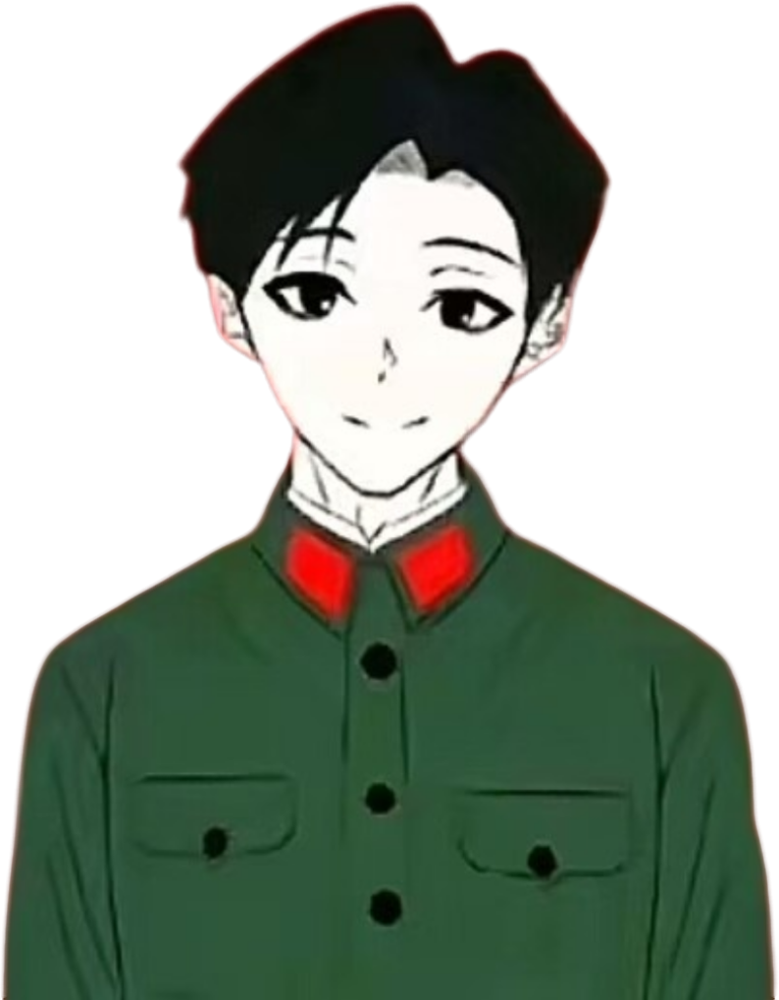

聚是一团火，散是满天星
关于蓝猫
关于团队
关于c圈
更多详情
天子·杨超博

“
一个脱离低级趣味的人
”
——天子·杨超博
天子，河北人，九年义务教育编制内人士，23年混迹55圈与ep产生冲突双方约定结下2000块的穷鬼局55，最后由于一些摁字狗和吹牛逼约架失败.再后来和cod主播“孤独华”打五五，名震id“机枪皇帝”，虽然在实力上略输一筹被掠去大势但是杨先生仍然在赛后羞辱事件之前，利用esu手段封禁孤独华直播三天
后来杨先生踏入喷系深造，在留学一年之余后，海龟c圈，打下，“白帝”“山鱼”等人，抢下“平安夜”
后来淡网研究技术，挖掘出广西神父和安徽共头，紧接着卷入阻力与继超的潶水闪击战役，建设仙祭
25年7月担任复兴蓝猫驻喷一代部长.8月份退出仙家军内政，9月份与苏无尘（吕宗恒）以及凌迟（刘兴宇）飞夺潶水，历时两天达到统一，后在9.1开学之际，快手被蓝猫宣传部门刷屏，打开快手就看见蓝猫，建立大爱一家盟，旗下势力两次突破百
在互联网短暂的疯狂之后，杨先生同样在11 月被卷入“东宁蓝猫”事件，玉碎河北，一代天骄含泪葬花，12月回归C圈开创喷凌驻C和罪天驻C，二月份开设蓝猫驻c，带领其重回巅峰
片条の玉碎
姓名
杨超博
常用ID
文雅派大师
职业
项佐死忠粉
能力
出道
社会性革命
批斗
硬度/智商
★★★★★★/∞
活跃度
中
关于天子·杨超博
▼
杨超博（天子），是该站的缔造人及总编之一，对齐表达至高无上的敬意，该人物在其玩网生涯中，为蓝猫鞠躬尽瘁，别无他心，对待子弟悉心教导，该站的考证人员曾经问询过其：试问先生玩网生涯有什么后悔与追忆之事呢。先生只是笑笑：忠心对我的我以诚心来待这就足够了... 蓦然回首，杨先生的大义仍然滋养着跟随他一同探寻道义的追随者，影响着越来越多的人 现如今，在杨先生的指导下，蓝猫驻c部门又重新焕发熠熠荣光 本站再次以崇高的敬意，对该人物表达谢意！